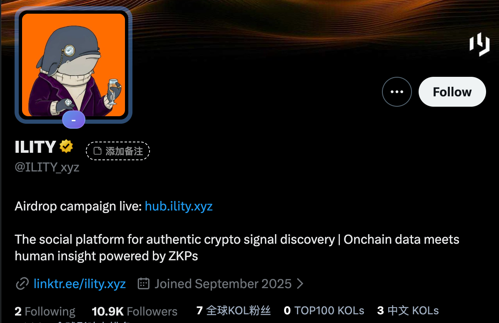
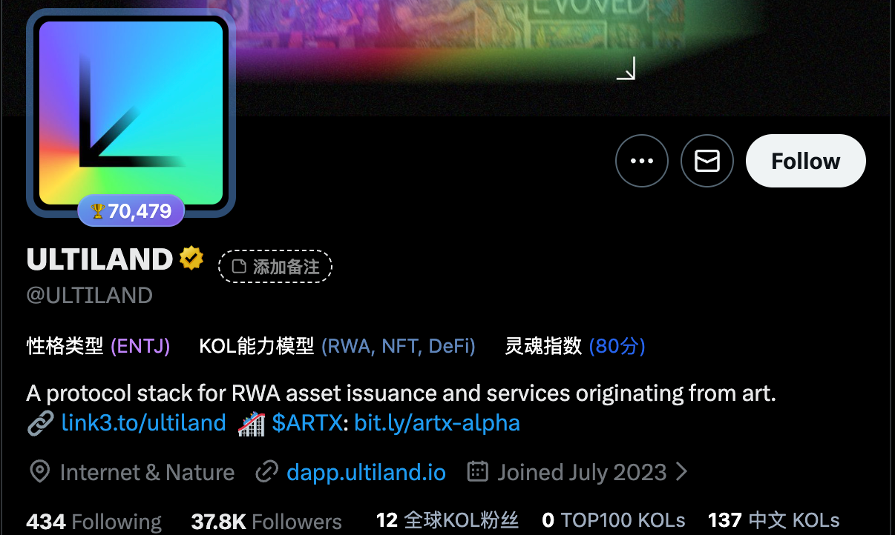

ILITY vs. ARTX (Ultiland)
Bitget CEX 上币数据对比与增长方案分析报告
📊 核心数据对比
| 指标 | ILITY (@ILITY_xyz) | ARTX (ULTILAND) | 差距 / 状态 |
|---|---|---|---|
| Twitter 粉丝数 | 10.9K | 37.8K | 缺口 ~27K |
| TG 成员数 | 10.8K | 73.7K | 缺口 ~62K |
| Discord 成员数 | 8.3K | 42.9K | 真实率领先 |
| 周互动深度 (Activity) | 低 | 极高 | 核心痛点 |
| 主要活动类型 | 积分制 Hub, Zealy | Binance Live, AMA | 缺乏顶级背书 |
🔍 社交数据截图

ILITY Twitter 现状

ARTX (已上线标杆)

ILITY Hub Airdrop 活动
📈 ARTX 成功路径分析

Binance Square Live 直播

高频 AMA 活动
- 高频价值激励：通过 USDT 抽奖迅速拉升社媒互动（Likes/RTs）。
- 顶级平台背书：在 Binance Square Live 直播是上币审核的关键加分项。
- 多维度分发：利用 Galxe/TaskOn 等平台进行流量矩阵轰炸。
🚀 ILITY 增长建议 (Growth Proposals)
P0
顶级平台直播与知名项目方 AMA
- Binance & Bitget Live：申请官方直播，邀请 ZK 赛道头部大咖对谈。
- 联合 AMA：与已上线项目（如 ARTX, Polyhedra）联动。
- 流量导入：直播期间设置 Hub 独家空投码，引导流量通过 ZK 验证进入。
P1
地区垂直社群建设 (Telegram Topic)
- Topics 架构：开启 Topics 功能，细分为 #News, #ZK-Tech, #Alpha。
- 本地化运营：招募越南、土耳其社区 Leader，建立真实信徒圈层。
- 证明真实性：向 CEX 展示组织严密的活跃社群，而非僵尸粉。
P1
社群活跃度“人工干预”计划
- 大使团制度：招募 15 名大使，三班倒覆盖全球时段。
- 深度话题引导：每日由运营下发 5-10 个深度讨论话题。
- 制造繁荣景象：确保每 10 分钟都有真实内容讨论，平稳通过审核期。
📅 推进计划与关键里程碑
Phase 1
3月20日 - 4月20日
孵化运作与流量爆发
目标：上线 MEXC (抹茶)
- 启动大规模 Airdrop Campaign。
- 实现社群基数与互动数据的跨越式增长。
- 4月20日：对接 MEXC 上线并搭建流动性池。
Phase 2
4月20日 - 5月初
预热现货与交互拉升
目标：上线 Bitget Onchain 板块
- 上线 Bitget Onchain (预现货) 进行初步洗粉。
- 发力 Airdrop Program，刷爆链上交互人数。
- 制造社区繁荣景象，通过 Bitget 上币观察期。
Phase 3
5月第二周
Bitget Spot 正式上线
最终目标：Bitget 现货上市
- 整合 MEXC 交易数据、Onchain 交互数据及社媒活跃度。
- 利用上线前最后冲刺活动实现品牌声量峰值。